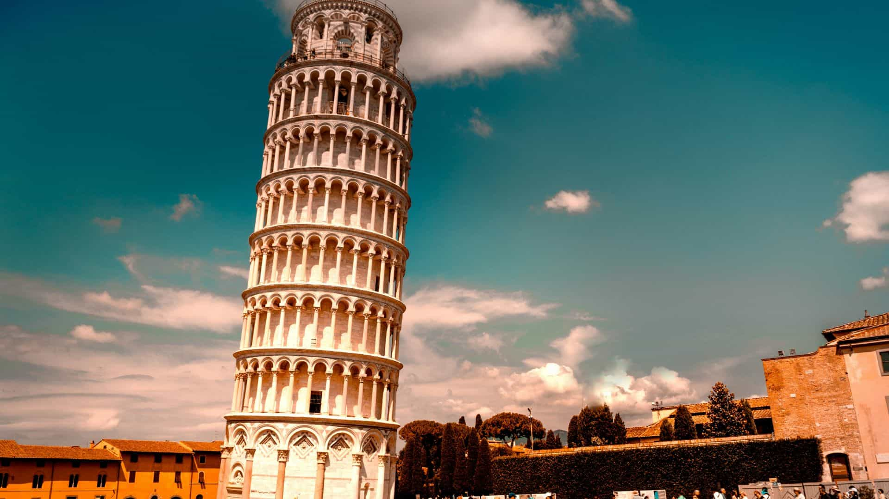
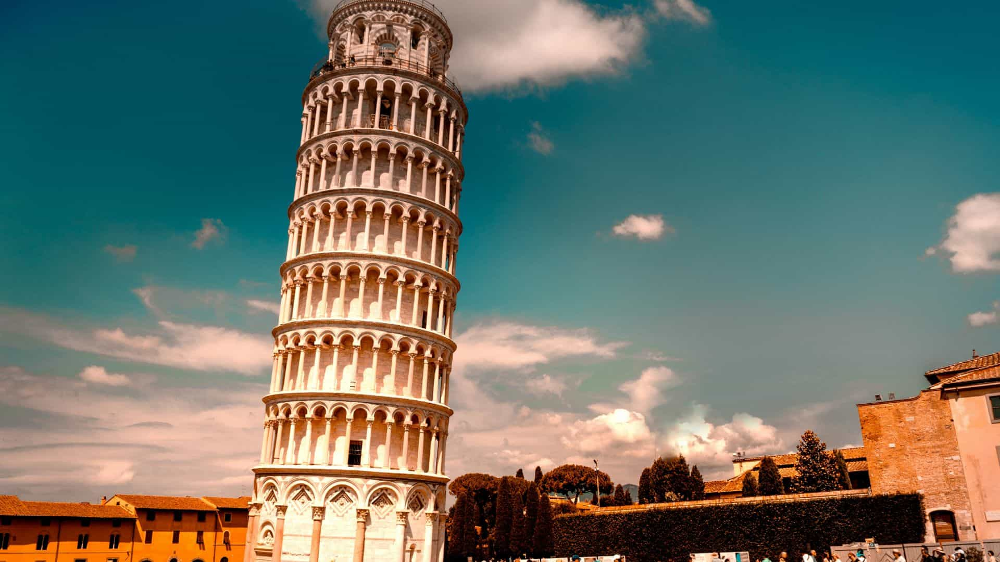
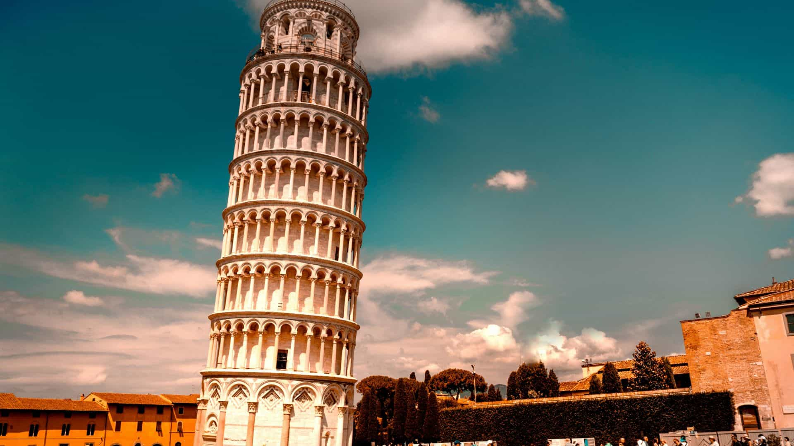

Olaszország Európa egyik legnépszerűbb turisztikai célpontja, ahol az ókori történelem, a világhírű művészet és a lenyűgöző tájak páratlan kombinációban találkoznak. Legyen szó a Római Birodalom emlékeiről, a toszkán dombvidék borairól, a Velence csatornáin ringatózó gondolákról vagy Nápoly híres pizzájáról – minden utazó talál valami különlegeset. Az ország gazdag kulturális öröksége, változatos régiói és vendégszerető lakói garantálják az emlékezetes élményeket.
